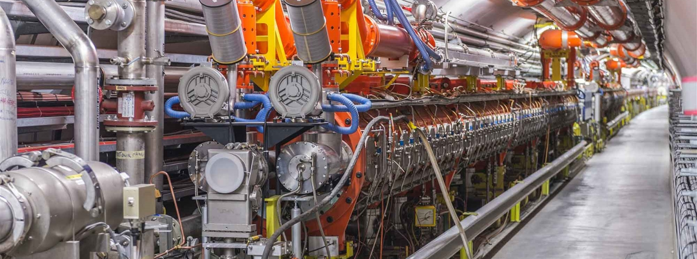
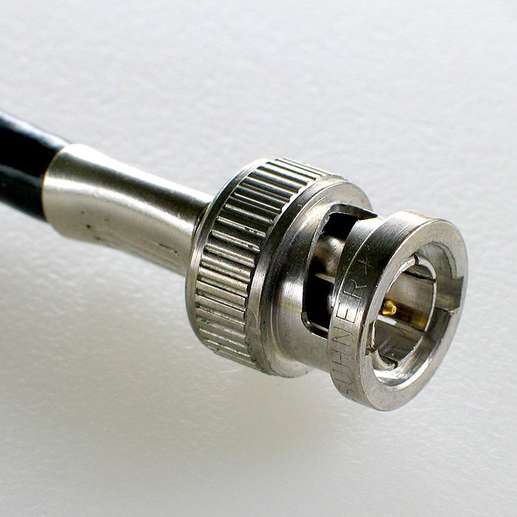
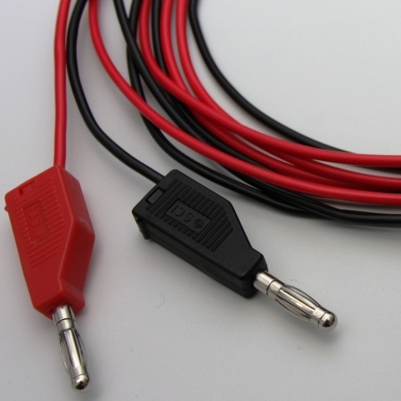
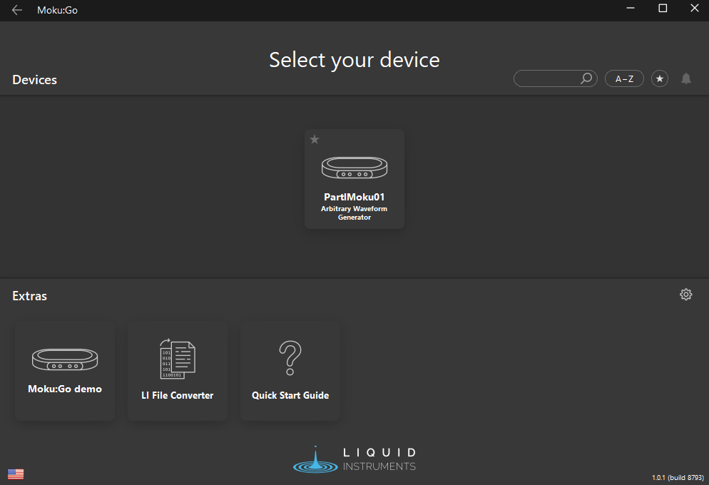
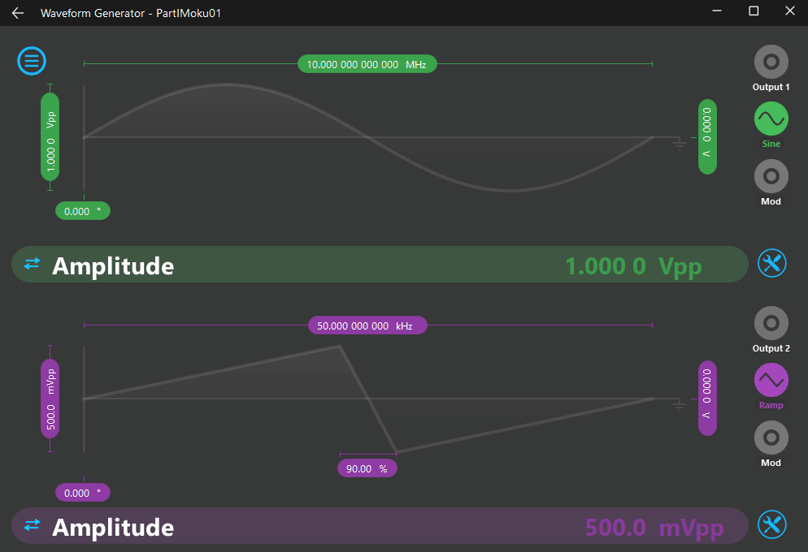
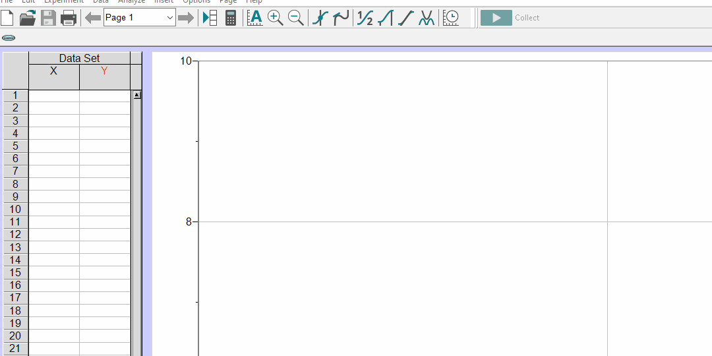

Hardware¶

This page is designed to be a veritable cornucopia, in that is provides an abundance of information and resources on most of the hardware devices that one might encounter in the physics labs here at UTAS.
Guides and manuals¶
An often overlooked skill in science and other disciplines which concentrate on problem solving is the ability to both source and digest instructional materials. Proficient use of an internet search engine can go a long way to solving most problems; however, establishing a repository of commonly required documents can go some way to streamlining the process, especially in the case of antiquated or bespoke equipment.
Where possible, device manuals as prepared by the manufactures have been sourced; whilst usually very thorough, they are often terse. As a remedy to this, usage notes have been prepared to provide a succinct discussion of devices in the context of their deployment and usage at UTAS. Support materials, usually in the form of python code and sample data are also provided where relevant.
List of analogue devices and uses¶
| Device | Purpose |
|---|---|
| Callipers | Precise measurement |
| Device | Purpose |
|---|---|
| Barometer | Atmospheric pressure measurement |
| Callipers | Precise measurement |
| Integrating amplifier | Atmospheric pressure measurement |
| Regulator | Pressure regulation of high-pressure gases |
| Device | Purpose |
|---|---|
| Callipers | Precise measurement |
Analogue devices¶
Barometer¶
Integrating amplifier¶
List of digital devices and uses¶
Different devices with different levels of sophistication are used across the different years and consequently they are best indexed by the level of study
| Device | Model | Description |
|---|---|---|
| Multimeter | Tenma 72-14500 | Digitial pocket multimeter |
| Software-defined instrument | Moku:Go | Multipurpose device |
| Hardware interface | Vernier Labpro | Collect data from sensors |
| Device | Model | Description |
|---|---|---|
| Arbitrary waveform generator | Rigol DG1032Z | Signal generator |
| Data logger | Pico Technology ADC20 and 2000 | Measurement device |
| Digital (storage) oscilloscope | Rigol DS2102E | Electronic test instrument, advanced measurement device |
| Multimeter | Duratool D03122 | Digitial multimeter |
| Device | Model | Description |
|---|---|---|
| Digital (storage) oscilloscope | Rigol DS2102E | Electronic test instrument, advanced measurement device |
| Arbitrary waveform generator | Rigol DG1032Z | Signal generator |
| Data logger | Pico Technology ADC20 and 2000 | Measurement device |
| Single-channel analyser | Spectrum Techniques UCS30 | Measurement device |
| Software-defined instrument | Moku:Lab | Multipurpose device |
Devices¶
Duratool D03122 (multimeter)¶
Moku:Go¶
The Moku:Go is a multipurpose, software-defined instrument with the main use of the device being a testing instrument and as a power supply. To physics connections must be made to the device directly using either cables with BNC connectors (for signal input and output) or cables with banana plugs (for powering circuits or devices).
Connector types


To use the Moku:Go, one must use the Moku:Go desktop app, which should be installed on all laboratory machines, and further information of the software can be found elsewhere. In order to use the device, one should open the Moku:Go desktop app software, and with the device powered on and connected (either by USB or Ethernet) select the device from the list of available devices. Once connected, one can select the desired instrument from the menu and proceed to use the device. The connection process is shown below:

The available software defined instruments are listed below, along with specific details and instructions.
| Device | Usage |
|---|---|
| Oscilloscope | An oscilloscope to measure time-varying signals |
| Spectrum Analyzer | A spectrum analyser to determine the frequencies present in a signal |
| Waveform Generator | A waveform generator best suited to producing simple periodic signals |
| PID controller | A control system used to stabilise an external system using measurement and feedback |
| Data Logger | A data logger to measure and record input signals over a defined period |
| Frequency Response Analyzer | A tool used to measure the frequency response of a system |
| Arbitrary Waveform | A waveform generator suited to creating complex (arbitrary) signals |
| Logic Analyzer | A tool for the analysis of digital communication protocols |
| Power supply | Used to power systems |
Power supply¶
Power supplies are used to power devices, and provide current or voltage to a circuit. Each Moku:Go has 4 power supply outputs, with the channels 1-4 running from left to right on the back of the device. Different channels are capable of different output currents/voltages, and the specifications are listed in the table below.
| Channel | Voltage | Current |
|---|---|---|
| 1 | -5 to +5 V | 0 - 150 mA |
| 2 | 0 to +16 V | 0 - 150 mA |
| 3, 4 | 0.6 to +5 V | 0.06 - 1 A |
In order to use the power supply, one must have an instrument activated. So even if you only want to use the power supply, you must initiate an instrument (it doesn't matter which) and then the power supply parameters can be selected and configured from the menu on the left hand side by selecting Power supply. Set the desired value(s) for current and voltage for the different channels, and ensure to enable the output by clicking the switch on the top right of each channel, as shown below.

Additional resources¶
Moku:Lab¶
Additional resources¶
Tenma 72-14500 (pocket multimeter)¶
Pico Technology ADC20 and 2000¶
Rigol DS2102E (oscilloscope)¶


Rigol DG1032Z (signal generator)¶
Spectrum techniques UCS-30¶
Vernier LabPro¶
The LabPro is an interface which is used to power a range of sensors, in addition to interpret and process the signals produced by the detectors allowing for the collection of experimental data via computer.
To use the LabPro interface, the program Logger Pro must be used, which should be installed on all UTAS lab computers, and details on the software can be found elsewhere on this site. The sensors to be used in conjunction with the interface are listed below
Radiation monitor¶
Manufacturer's website // Manual // Usage Note
The radiation monitor (Vernier VRM-BTD) detects , , , and X-ray radiation. The detector does not provide any information beyond an indication that radiation has been detected, returning a "count" each time the detector is triggered. To retrieve these counts, one must connect the radiation detector to a DIG/SONIC port on the LabPro, and then tell the Logger Pro software to collect data from the radiation sensor. The process to do this is illustrated in the animation below:

Advanced/extension content¶
Lab work is a great way to see complex and highly-capable software and hardware systems, but for most, it really marks the beginning of the journey. Content here is best consumed by discerning individuals or groups, as it is aimed at those with an eye to moving beyond basic functionality: learning not just how to drive the thing, but aspiring to compete in the Dakar Rally.
At this stage, content is still in development, but resources exist in the alpha stage for interfacing with both the Rigol DS2102E DSO and Rigol DG1032Z AWG. If you are interested in discussing or developing resources for either existing or new pieces of hardware, do not hesitate to get in touch!